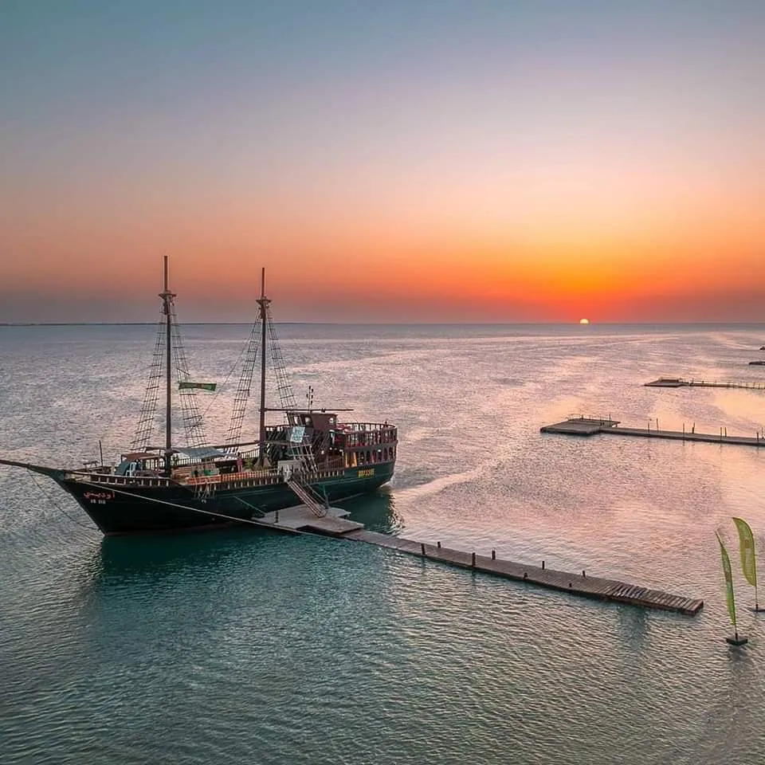
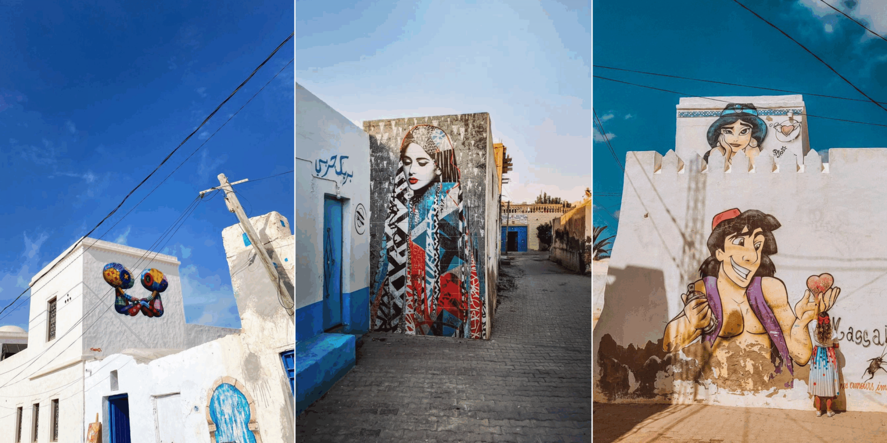
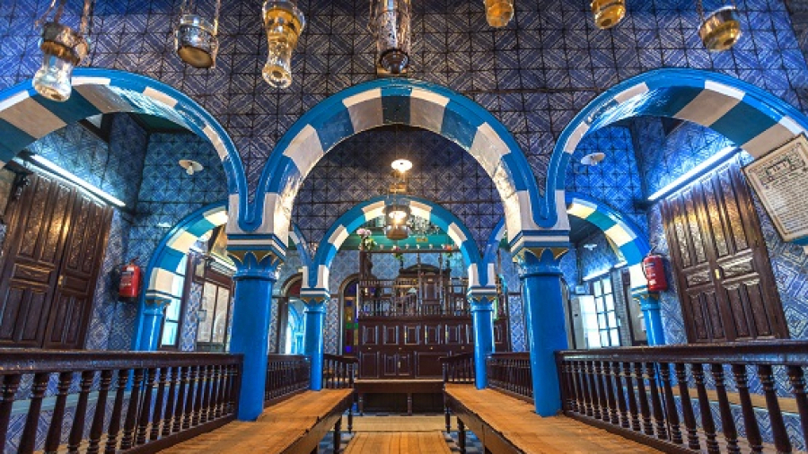

Médenine est une ville située au sud-est de la Tunisie, connue pour son patrimoine historique, son architecture traditionnelle et sa culture saharienne. Elle est célèbre pour ses ksour, d’anciens greniers fortifiés composés de cellules appelées ghorfas, qui témoignent du mode de vie des habitants autrefois.
La ville constitue également un point de départ idéal pour découvrir les paysages du désert, les villages berbères et les traditions du sud tunisien. Grâce à son artisanat, à sa gastronomie locale et à son histoire fascinante, Médenine offre aux visiteurs une expérience authentique au cœur du patrimoine tunisien.
Les fameux Destinations
Ras Rmel — l’île aux Flamants roses
Ras Rmal, ou l'île aux flamants roses, est une presqu'île sablonneuse située au nord de l'île de Djerba, en Tunisie. Cette zone humide, classée site Ramsar depuis le 7 novembre 2007, est connue pour ses paysages naturels, ses plages immaculées et la présence des flamants roses, qui migrent vers cette région entre octobre et mars.
Les flamants roses, grâce à leur alimentation riche en caroténoïdes, acquièrent une teinte rose éclatante qui les rend visibles dans leur plumage. Les visiteurs peuvent profiter d'excursions en bateau pirate ou en quad pour explorer cette merveille naturelle et découvrir les trésors cachés de Djerba.

Djerbahood
Djerbahood est un projet d'art urbain à grande échelle lancé en 2014 par la Galerie Itinerrance (Paris).
Il a transformé le village historique d'Erriadh (également appelé Harra Sghira) en une galerie en plein air permanente.
Plus de 4 500 bombes de peinture ont été utilisées pour réaliser les 250 œuvres qui ornent maintenant ses rues.

La synagogue de la Ghriba
La synagogue de la Ghriba est la plus ancienne synagogue de Tunisie et d'Afrique en activité, et constitue l'un des principaux marqueurs identitaires des Juifs de Djerba,
l'une des dernières communautés juives vivantes du monde arabe. Elle fait l'objet d'un pèlerinage annuel, à l'occasion de la fête juive de Lag Ba'omer, rassemblant plusieurs milliers de pèlerins.
C'est l'une des principales attractions touristiques de l'île de Djerba.
